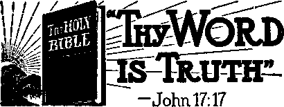
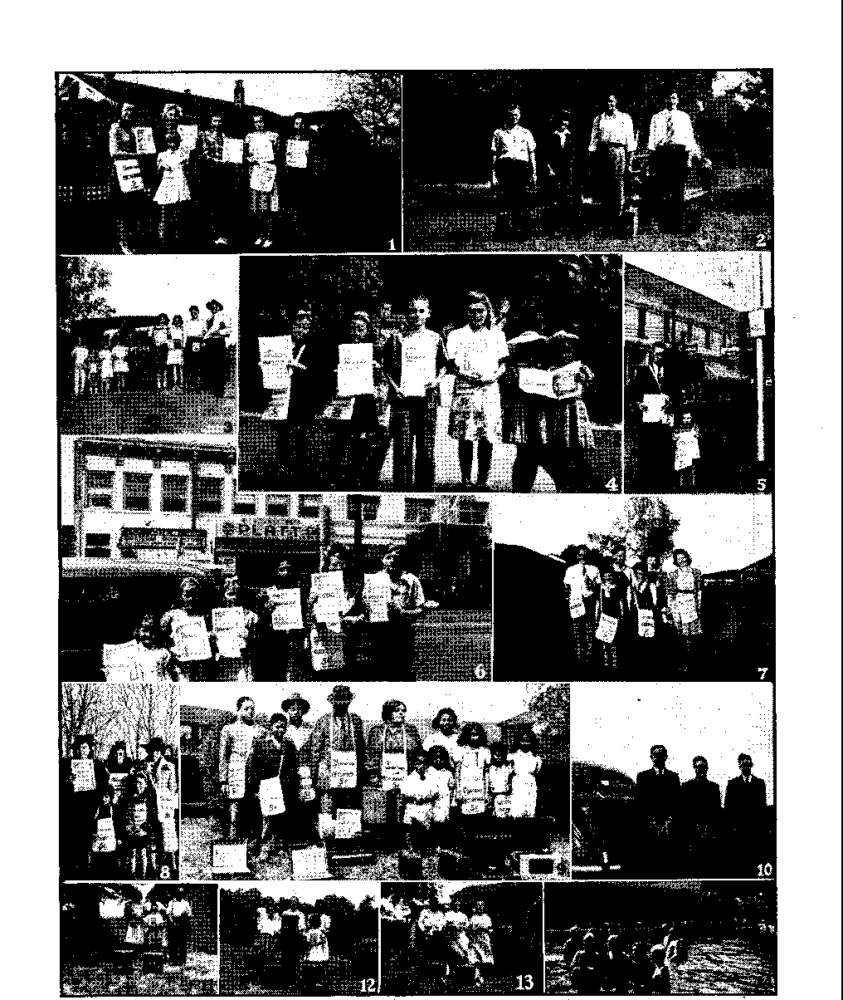

■ Returning to American Fundamentals
The People the Sovereign Power
, Jehovah’s witnesses Have Rights
Constitutional Rights Inviolate
Steps in the Depopulation of Norway
Other “New Order” Bestialities
“Thy Word Is Truth”
“Universal Su per-Government Advocated”
Is Mary the First of All Saints? .
I From Cyprus, “The Corner of the World” 24 ‘I and My House’
“Blameless in the Day of the Lord”
Presenting “This Gospel of the Kingdom”
Published every other Wednesday by
WATCHTOWER BIBLE AND TRACT SOCIETY, INC.
11T Adams St., Brooklyn, N. Y., U, S. A,
OFFICERS
President N. H. Knorr
Secretary W. E. Van Amburgh
Editor Clayton J. Woodworth
Five Ceuta a Copy
JI a year In the United States fl.25 to Canada and all other countries
. f NOTICE TO SUBSCRIBERS
Remittances: For your own safety, remit by postal or express money order. When coin or currency Is lost in the ordinary mails, there is no redress. Remittances from countries other than those named below may be made to the Brooklyn office, but only by International postal money order.
Receipt of a new or renewal subscription will be acknowledged only when requested. Notice of Expiration Is sent with the journal one month before subscription expires. Please renew promptly to avoid loss of copies. Send change of address direct to us rather than do the post office. Your request should reach us at least two weeks before the date of issue with which it is to take effect. Send your old as well as the new address. Copies will not be forwarded by the post office to your new address unless extra postage is provided by you.
Published also in Greek, Portuguese, Spanish, and Ukrainian. -
OFFICES FOR OTHER COUNTRIES
England 34 Craven Terrade, London. W. 2
Australia 7 Beresford Road, Strathfleld, N. S. W.
South Africa 623 Boston House, Cape Town
Mexico Calzada de Melchor Ocampo 71, Mexico, D, F. Brazil Caixa Postal 1319, Rio de Janeiro
Argentina Calle Honduras 5646-48. Buenos Aires
Entered as second-class matter at Brooklyn, N. Y„
under the Act of March 3, 1870. t
~ Notanda'1
Taming the Head-Hunters
♦ Ernie Pyle, war correspondent, tells of a conversation he had with a cartoonist about the time of the first great battle in the Solomon islands. The cartoonist said to him:
Isn’t it ironic? For years both our countries have been sending missionaries to such places as those to tame the head-hunters. And now the head-hunters have to take to the jungle for safety, while we civilized people fight it out on their beaches.
That is only part of the problems confronting the head-hunters. They had almqst as much reason to flee from the missionaries as from the machine guns. The former came to tell them that their ancestors are all in a blazing hell; the latter, to show them on the beaches what the missionaries think hell is like.
The Ford Bombers B-24-E
♦ The Ford bombers B-24-E, now being produced at the alleged rate of one an hour, weigh 30 tons each, carry four tons of bombs, and can travel 3,000 miles at a speed of 300 miles an hour. It is a military secret how many employees are engaged in this work, but the preliminary estimates are that about 85,000 men and 25,000 women would be needed. The factory producing them was built in 13$ months and cost $58,000,000. It is 3,200 feet .long and 1,280 feet wide. These facts are gleaned from information published in the New York World-Telegram and the New, York Times recently.
Corn Belt vs. Meatless Days
♦ When farmers in America’s corn htelt heard talk about this country’s having meatless days, they could not understand it. They thought that, with the most meat animals in history on their farms, and the crops the biggest and best, and 16 percent more cattle and hogs sent to the market in the first six months of 1942 than the year previous, there just must be a mistake somewhere. .
“And in His name shall .the nations hope.”—Matthew 12:21, A.R.V.
Vofum»XXIV Brooklyn, N. Y., Wednesday, May 26, 1943 Number $18
Returning to American Fundamentals
THE fundamental principle upon which the American system of government, a “democracy”, .rests is “the rule of the people”. Abraham Lincoln stated it to be “that government of the people, by the people, and for the people”. That means that the people of the United States are the sovereign power or rulers of this nation—not the Congress, not the president, not the judiciary, not the various state governments, and not the municipal governments of the land. The framers of the Constitution recognized the sovereign power or rulers of the nation to be the people in these words: “We, the people of the United States, in order to form a more perfect Union, establish justice', insure domestic tranquillity, provide for the common defence, promote the general welfare, and secure the blessings of liberty to ourselves and our posterity, do ordain and establish this Constitution for the United States of America.” Before a skeptical world groaning under, the oppressive heels of tyrants;, monarchs, czars and emperors these men declared that the people, and not dictators, were the proper ones to rule. It was regarded by such skeptics as an experiment that would soon fail. Although the youngest of the great governments of the world, it has survived many bloody assaults from without and internal upheavals during the past 1.50 years, and it now faces the greatest struggle in all history to determine whether, the “experiment” will remain in the earth until God’s kingdom or government of righteousness is in all the earth. ■
Pitched in Battle against all nations composing “the king of the south” is “the king of the north”, or the Axis powers that stand for dictatorship, and both systems are now struggling for world domination. Dictatorship stands for absolute control of the community by the will of a single ruler or hierarchy. The people are not the sovereign power under such system, but are the “beasts of burden” to sustain the corporate state in its scheme to regiment all mankind. Such governments are saddled upon the people and. rule through fear and dread of sudden punishment or death decrees in secret chambers from which there is no appeal or relief. This theory of government originated in ancient Babylon under Nimrod, who was the first dictator, and has extended down through the centuries of mankind’s history in one form or another. The system has always advocated the “divine right of kings” theory and the people are forced to subscribe to the doctrine that “the kin^ can do no harm” regardless of tyranny.
It is very manifest that the officers of the government of the United States do not exercise their various powers and functions by virtue of any “divine right of kings” theory, but that they are servants of the people and can be discharged at the will of.the people. The nation is a democracy, and not a Theocracy; which means that the people have the controlling voice in the government. The founding fathers of this nation loved Almighty God and did not intend to establish this government as a substitute for or as,a means to fight against God’s kingdom or the establishment thereof. The framers of the Constitution intended the government to be a haven or place of refuge for all oppressed peoples and-those who desire liberty and the right to worship Almighty God according to the dictates of conscience. They believed tin the Lord’s prayer ’Thy kingdom come tn earth as in heaven’ (Matthew 6:10), and in the words of Daniel: “And in the days of these kings shall the God of heaven set up a kingdom, which shall never be destroyed: and the kingdom shall not be left to other people, but it shall break in pieces and consume all these kingdoms, and it shall stand for ever.”—Daniel 2:44.
They Believed God
These men believed in the word and promises of Almighty God and anxiously looked forward to the time when the battle of Armageddon would completely break the yoke of the oppressor and when the sovereignty of all governments would be removed from man and transferred to the duly constituted “King of kings, and Lord of lords”, Christ Jesus, in whom God will vest authority and power to rule over the people. The covenant servants of Jehovah, His witnesses, see the circumstantial evidence of the presence of the time when this authority has been transferred from man to Christ Jesus. They now proclaim liberty throughout the land and in many nations that the people may give their allegiance to Jehovah God and His King Christ Jesus, who now rules from His heavenly throne over The Theocratic Government. — Isaiah 9:6,7; Daniel 7:13,14 ; Psalm 110:2. :
Breaking the Bands of Religious Fear
This message of the kingdom or rulership of Christ Jesus as the sovereign power in The Theocracy is proclaimed By Jehovah’s witnesses to all people of good-will toward God that they may escape the great destructive tribulation at Armageddon, which is very near. This' enlightening message breaks the bands of superstition and religious fear that have kept the people in blindness concerning God’s purposes.. The people become aware that the religious clergy have held back such life-giving message from them through fraud, deception, and the precepts of man, and they are fast abandoning religion for the new world, God’s kingdom of righteousness. This turning away from religion dries up the pastures of the hypocritical clergy who conspire with the enemies of God’s kingdom, and who are enemies of democracy, to stop Jehovah’s witnesses. In order to stop Jehovah’s witnesses it is necessary for these enemy conspirators to destroy democracy itself. While the terrible war rages for world domination the clergy conspirators, “home-grown enemies” of the Bill of Rights, take advantage of the emergency and cause laws to be enacted or misapplied to cause the arrest, prosecution and conviction of such faithful servants of Jehovah God. These laws are enforced contrary to the Constitution, and powerful influence, political and religious pressure and prejudice, is brought to bear upon the judicial officers to sustain them without regard to the destructive effect upon the Bill of Rights, the liberty shield of all men, regardless of color, station in life, or creed.
Under such great break-down pressure the United States Supreme Court gave way and allowed abridgment of the people’s rights when it approved the ' compulsory flag salute forced upon children of Jehovah’s witnesses in public schools of the nation and when it sustained laws requiring the payment of money for a license from local authorities as a condition precedent to preaching the gospel of God’s kingdom in such cities.
These two decisions directly affect the people of the United States, who are the sovereign power of the nation. The decisions directly impair the fundamental liberties of all citizens and persons in
the land, which the Bill of Rights declared could not be permitted. The decisions' and impairment are based upon the theory 4that the government is the sovereign power, and not the people. It ignores the fact that the government is the servant of the people and was created to protect, not impair, the rights of freedom of conscience and freedom of the ■ press and freedom to worship Almighty
God. The sovereign people of the United States are entitled to be enlightened concerning the effect and fallacies of the holdings of the high court sustaining the abridgments and impairment of these liberties. The sovereign people cannot enjoy and exercise their sovereignty under a democracy unless they are enlightened. The purpose of this article is to educate the people as to their rights and the devastating effect of the Supreme Court decisions above mentioned.
•
The Servants of the People
Concerning the American government, it is very manifest that the officers of the government, the judicial,’legislative, and executive officers, in the exercise of their various functions, do not hold power by virtue of a "divine right of kings” theory. Here the governors are solely the servants of the people. At any time that the government fails to operate properly or proves inadequate to the changing conditions of the people, they, as the, sovereign power, have the right to change the form of government by legal and peaceable constitutional means. They have the right to make the change especially , if there is an invasion or abridgment of the fundamental rights of the people, those precious heritages: of. free speech and free press and freedom to worship Almighty God. The primary purpose of the creation and establishment of the government was for the protection and perpetuation of these precious rights. It was conceived and dedi-; cated for this protective purpose. The. Constitution was not fully ratified by all thirtdeii of the colonies until the Bill df~
MAY ai, 1S4S
Rights was proposed as a part thereof. Once the fundamental freedoms are impaired there immediately disappears the purpose stated by the forefathers for the maintenance of a government. The only binding tie and reason for the creation, of the government was to maintain these blessings for “our posterity”.
The wise men who wrote the constitution foresaw and forewarned that troublous times would come upon the nation and the people: that those in positions of authority in the government in turbulent seasons would become restive and, through stress of emergency, depression, war and otjper perils, would usurp their powers as servants of the people and assume the authority of dictatorial tyrants so as to take away, abridge and deny the fundamental liberties. It was against these, times and seasons that the Bill of Rights was created. It was not a peacetime document, but a wartime document, having been passed in the wake of a terrible conflict that spilled much blood. These men recognized that these fundamental rights are inherent and abide with men regardless of the vicissitudes of life and changing international and internal conditions.
Can the Bill of Rights Be Abrogated?
Among certain elements of the population of the land who believe that the Bill of Rights can be abrogated during time of-war, there is a feeling that on the outbreak of hostilities or upon declaration of war a victory cannot be gained with a full and free exercise of the fundamental rights secured by thedo’cu-ment. There is thus a-growing feeling that the inherent rights of speech, press and worship can be shelved or iced away for the deration of-the war. No more pernicious or alien doctrine has ever been invented by the mind of-man than this-: That any of the provisions of'tliA Bill ^of Rights can -be suspended during a great national emergency or war. Once lost they cannot be regained except by blood-spilling and struggle; hence, ail
5
the more important is it that these rights should be more fully exercised in time of war than in time of peace. The Constitution of the people clearly and specifically defines what the government shall and can do in time of war. There cannot. '. be found one word that says, or from |which it can be implied, that any person can be denied the exercise of these funda-' mental rights; but, of course, confidential matters of the government itself, par-■ ticularly with reference to the military and naval forces, must not and can not be publicly or privately circulated. These things, in time of war, must, because of their very nature, be kept confidential, lest comfort and aid be given the enemy of this government. Since a Christian is concerned only with preaching the gospel of God’s kingdom, he will not be concerned in giving military advice or secrets and will not exceed his fundamental personal rights along that line. But that’does not mean that he should not and can not exercise these fundamental rights to advertise and show the need of God’s kingdom.
The People the Sovereign Power
The strength of a nation in times of war lies in the unhindered and unrestricted exercise of the rights bf freedoin of speech, of press, and of worship of Almighty God by the people, who are themselves the sovereign power of the nation. The men at the battle fronts are fighting, not to keep individuals in office, but, according to the president and the Office of War Information, to preserve the four freedoms and the American way of life which finds its basis in these cherished freedoms. The removal or impairment of any of these freedoms takes away the power, strength, courage and vision which spurs on the people to victory. Without these freedoms they would become blind and an easy prey to the enemy. The clear vision and free exercise of these rights on the home front keeps before the nation the issues over which the fight is being fought. The principle of upholding civilian morale and military strength through the exercise rather than the suspension of any of these rights can best be illustrated in the conditions existing in the South and the North during the Civil War. In the North absolute freedom of expression publicly Snd privately in writing and orally was allowed on all subjects, even in some combat zones. Washington, D.C., was a very few miles from the battle front, but freedom was nevertheless allowed there.
In the South the conditions were much different—the reverse. There the education of the people, particularly the plantation owners and persons of wealth and influence, had been largely left in the hands of the Roman Catholic Jesuits, who had stealthily instilled their ideas of slave and master classes between the peoples. The evil effects of such training had made itself manifest in the course of action taken by officials of the Confederacy. They had been taught the Jesuit and Roman Catholic Hierarchy policy to keep the people in ignorance of what was going on and to set the governors and rulers up beyond point of criticism and scrutiny by the people. This Hierarchy doctrine smacks of the “divine right of kings” and of clergy from which the people rebelled. The people of the Confederacy were denied their rights of sovereignty. Sessions of the Confederate Congress were held in absolute secrecy and the public press was under the direct supervision of the military censors. No person was allowed to criticize the conduct of the war or any other governmental measure. This condition, contrasting with liberty in the North, had as much to do with the defeat of the South as did the strength of the military forces of the North. Suppression of free speech and other liberties suppressed the morale of the people of the Confederacy from which the army received its support. These factors are mentioned here to emphasize the importance of maintaining at all times the fundamental freedoms in times of the darkest hour and most perilous times in war or in peace.
God's Law Changes Not
Jehovah God states: “For I am the Lord, I change not.” (Malachi 3:6) His law governing the conduct of creatures in a covenant to serve Him as His witnesses also changes not. There are no seasons of obedience to Jehovah God’s law and His Theocratic government. His commandments must be obeyed at all times. They change-not in time of peace nor in time of war. His rule of conduct prescribed in the Bible to maintain integrity and preach the gospel is not affected by the action of men and nations. Jehovah jnakes no allowance for any change in the rules of preaching the gospel by His ambassadors in times of war nor in times of peace. Christ Jesus, in His prophecy concerning the time of the end of the world, declared: “And ye shall hear of wars and rumours of wars: see that ye be not troubled: . . . For nation shall rise against nation, and kingdom against kingdom: and there shall be famines, and pestilences, and earthquakes, in divers places. . . . Then shall they deliver you up to be afflicted, and shall kill you: and ye shall be hated of all nations for my name’s sake. . . . But he that shall endure unto the end, the same shall be saved. And this gospel of the kingdom shall be preached in all the world for a witness unto all nations; and then shall the end come.”. The founding fathers of this nation did not purpose that the preaching of this gofepel should be,stopped in the land, and the modernday persecutors of followers of Christ are acting contrary to the express word of the writers of the Constitution. To protect the people the writers of the Constitution wisely made provision for a place of recourse, the judiciary, the Supreme Court of the United States, the people’s court.
In establishing the national government the people realized that there must be some instrumentality to settle dis
MAY 26, 1643 putes between the sovereign people and their agents and servants, the government and officials thereof. That the constitutional arrangement might operate properly and smoothly and that the government and officials be kept in-their proper field and not allowed to infringe' upon the rights of the sovereign people of the United States, provision was made for the said people’s court, the Supreme Court of the United States, the last bulwark of Americanism and constitutional rights. Its duty is to hold the constitution inviolate. Mr. Chief Justice Marshall said: “We must never forget it is a constitution we are expounding.”
A Delicate and Difficult Task
When totalitarianism is threatening to engulf the entire world it is more important in wartime than in peacetime or any other time that the court maintain its absolute independence*from clamor and national policy and strictly adhere to naked principles of righteousness enunciated in the Bill of Rights, because this is the only hope of preserving the American way of life—the preservation of these freedoms. The United States Supreme Court has the definite duty and delicate and difficult task of correcting fundamental errors striking at the very heart of the Bill of Rights in the cases sustaining the license tax and compulsory flag salute. It can regain its balance and proper position in the constitutional life of the government by “returning to American fundamentals” of sovereignty of the people to choose their own speech and their own writings and worship God in a manner acceptable to the dictates of conscience and as directed by Almighty God. The Supreme Court does not have the right to intrude itself into the field of opinion of Jehovah’s witnesses by sustaining laws making compulsory the participation in a religiouspolitical ceremony contrary to their conscience, nor docs it have the right to abridge the right of millions of American citizens to receive Jehovah’s wit-
7 nesses at their doors and into their homes by declaring legal a license-tax law to burden and prohibit such apostolic preaching. *
Fifty-five Million “Churched”
In the United States of America there tare upward of 135,000,000 people, of Svhom only 55,000,000 belong to the recognized great religious sects and cults. There are great numbers of the millions of church members who do not attend regularly; Therefore there are approximately 80,000,000 who have absolutely no means of receiving spiritual comfort and Bible instruction except that someone volunteers to take it to such persons in their homes. Among these millions of persons Jehovah’s witnesses have volunteered and come to the "front” and have carried and are now carrying to the people at thek homes the vital, life-giving message of the Kingdom contained in the Bible. The many millions thus present a great emergency and urgent public need for Bible instruction in the home. These eighty million people are taxed for the. support of the government in behalf of the maintenance of the Bill of Rights; and if the government in behalf of the fifty-five million “religionists”' sanctions the promotion of religions activities and proclaiming “We need more religion” and safeguards religion from curtailment in the exercise of their ceremonies in the edifices of the land and provides for the religious organizations exemptions from taxation, then by great force of reason the majority of the people, approximately eighty million non-religious people, have, a right to demand that the government allow and safeguard the Christian activity of Jehovah’s witnesses,' belonging to no recognized religion, but who are Christians and have volunteered to bring the message of the New World of Christ’s kingdom to the people at their homes in a manner as did the Lord Jesus Christ and His apostles. These many, many millions of people who belong to no reli-
8
gion pay taxes, which works advantageously to the protection and maintenance of the religious institutions serving the other fifty-five million people; therefore the majority, or eighty million people, who are not served by the religious clergy, are entitled to be reached and benefited at their homes by the nonreligious Christians, Jehovah’s witnesses, who desire to educate the people in the Word of God. The sovereign people of which this vast majority consist have a legal right to be thus reached by such an educational campaign carried on now by Jehovah’s witnesses through the Watchtower Society. The right to this liberty is guaranteed by the Bill of Rights protecting the sovereign people.
Jehovah’s witnesses Have Rights
Jehovah’s witnesses are taxpayers and a part of the sovereign people or power of the nation. This fact cannot be denied even though they may not avail themselves of their political privileges nor actively participate in the affairs of this world. They have a liberty to abstain from such according tv their understanding of the Bible, which shows God’s commandments requires them to devote all of their time and energies to preaching the gospel, a higher calling above all the strifes, political, religious and social. They cannot turn aside from this tremendous task and emergency of serving the many millions of people in the land, with the truths of life in the kingdom of Almighty God. They must therefore remain entirely neutral and remain separate and apart from the worldly affairs so that, all their time can be devoted to this great job of preaching the gospel. Amidst war, famine, pestilence, earthquakes, peace, prosperity, and depression the preaching of the gospel of God’s kingdom must go. on unabated unto the end of the world at Armageddon. ■ .
Although the members of the judiciary may not agree with Jehovah’s witnesses as to whatL the Bible teaches,- as- it is
■ CONSOLATION
their right before Almighty God, the judiciary are bound by their oath of office to agree with Jehovah’s witnesses that the Bill of Rights gives the right to disagree on what the Bible teaches.
The Right to Disagree
Jesus recognized this principle of freedom to disagree, when He said: “Let them alone: they be blind leaders of the blind. And if the blind lead the blind, both shall fall into the ditch.” (Matthew 15:12-14) This illustrates that the real unity of the people of the nation does not rest upon unity of religious thought and opinion but upon unity as to what are the fundamental rights for which the nation is now avowedly fighting the Axis powers. The judiciary and the government cannot settle differences of opinion between the people as to what the Bible teaches—indeed that is beyond the authority of the judiciary. Mr. Thomas Jefferson said: “. . . that to suffer the civil magistrate to intrude his powers into the field of opinion, and to restrain the propagation of principles on supposition of their ill tendency, is a dangerous fallacy, which at once destroys all religious liberty . . . truth is great and will prevail, if left to herself; that she is proper and sufficient antagonist to error, and has nothing to fear from the conflict, unless by human interposition disarmed of her natural weapons, free argument and debate; errors ceasing to be dangerous when it is permitted freely to contradict them.”—Virginia Statute for Religious Freedom.
In ruling against Jehovah’s witnesses the Supreme Court has permitted itself to become entangled in precedent from which there is only one way of escape, to wit, cutting away and returning to fundamentals. The founding fathers of the court and nation did not'wait until a theory had become entangled in precedent before they abandoned it as error: they immediately avoided the disastrous consequences by immediately denying the principle. The fundamental rights
MAY 26, 1643
guaranteed by the Bill of Rights cannot be taxed, because, as Chief Justice Marshall said, in McCulloch v. Maryland, 4 Wheat. 113, “The power to tax is the power to destroy.” If an activity can be taxed, then a law can be passed prohibiting it. No law^can be passed prohibiting “religion" or abridging the free exercise thereof. Many un-American officials have branded Jehovah’s witnesses as “peddlers”, “canvassers,” “hawkers,” and other odious names, for the purpose of justifying their illegal imposition of the license tax. When they sober up long enough to realize what they are .* doing they will discover that Jehovali’s witnesses, when disrobed of such popularly conferred “garments”, are true, law-abiding American citizens, a part of the sovereign power of the United States, exercising fundamental, inherent rights guaranteed by the Bill of Rights, which cannot be abridged by taxation or license. The Supreme Court has held that the federal government created by the Constitution to protect the fundamental freedoms cannot be taxed by the . state nor can any agency of the government be taxed by the state. By similar token and double force of reason the “fundamental rights” guaranteed by the First Amendment and secured by the Fourteenth against abridgment by the state cannot be taxed. If the freedoms can be taxed, then the federal government created to protect the freedoms , can be taxed and thus all of such creatures of the Constitution be destroyed.
Constitutional Rights Inviolate
A minister of the gospel cannot be denied his constitutional rights because he engages in some secular work during the week to maintain himself and family and avoids being a burden upon the ' people he ‘serves with. God’s . Word, neither does he have to be a graduateof some seminary or parochial school. The apostles were .fishermen, tentmakers, etc., and even.Ghrist Jesus was a carpenter, but this did not disqualify them
' 9
for preaching the gospel. They were declared to be “unlearned and ignorant men”, yet they confounded the mighty, the noble and th'e wise with their knowledge of the commandments of Almighty God.—Acts 4:13.
i *
) To Err Is Human
It is not impossible for members of the Supreme Court to commit mistakes in deciding the cases before them. They are but men, nine imperfect men, who are human. It is often said it is human to err but divine to forgive. The members of that august body have frequently acknowledged that they were previously in error and have changed their decision to correct their mistake. Their mistakes in decisions acknowledged by them to be error are too numerous to mention. In June, 1942, three .members of the court publicly confessed that they were in 1 error in deciding against Jehovah’s witnesses in the Gobitis flag case. A more unstatesmanlike decision cannot be found unless it be the Dred Scott case, . in which the Supreme Court refused to liberate a Npgro slave prior to the Civil War, This decision was the match applied to the dynamite that blew the nation to pieces in the Civil War. The Gobitis case also was like a match applied to dried grass. It set the nation aflame with violence against Jehovah’s witnesses. Ever after such decision Jehovah’s witnesses were constantly throwm into the fiery furnace of public opinion, scorched and singed by mob violence, hatred, death and destruction, in thousands of instances, in hundreds of communities, and in every state of the.Union.
The decision and its effect were a test upon Jehovah’s witnesses, but they did not break in their integrity during the three years of “civil war” prosecuted against them in all the spates of the Union. God miraculously delivered them and gave them strength to push on in the battle to again present to the United States Supreme Court the identical problem involved in the Gobitis case, that it might clean its records and redeem itself. The experiences that Jehovah’s witnesses have had in the fiery furnace of mob violence forcibly reminds one of the almighty power of Jehovah God demonstrated in behalf of the faithful Hebrew Jehovah’s witnesses Shadrach, Meshach and Abed-nego iri the furnace of Babylon for their failure to bow down to the golden image representing the state.
The simple issues, fundamentals, involved in the flag salute ease and the license tax case should have been decided unanimously by the high court in favor of. liberty, thus contributing to national unity. The failure of the court to rule in favor of liberty has thus split the court; righteous judges on the court dissented in favor of Jehovah’s witnesses’ rights; and the court’s throwing Jehovah’s witnesses to the lions of public opinion, misrepresented by the press, has resulted in splitting the nation on the burning issue of right of conscience. These decisions have contributed greatly to disunity of the nation. How can there be national unity on, more complicated matters pertaining to the war being fought for the “four freedoms” among the people when the most trusted and most highly honored of all men .charged with the preservation of the greatesthuman document of liberty, the Bill of Rights, cannot agree among themselves as to measures to be taken on the court to preserve such simple, plain and fundamental liberties? The decisions against liberty have not been followed unanimously. On the contrary, many lower courts of the various state judicial systems have refused to extend the principles of the Gobitis decision and the opinion in the license tax cases. Many courts have flatly refused to follow the Supreme Court, and have ruled contrary to that high court; thus such low’er courts have preferred to be found in contempt of the United States Supreme Court rather than to violate their oath of office and their owm conscience by approving the
violation of the conscience of Jehovah's witnesses.
Glad to Obey the Law
In reference to the laws of the land, Jehovah’s witnesses are willingly and joyfully obedient to and do not refuse to obey any law unless it directly violates the law of Almighty God and their con* scientious allegiance to Him. They obey the laws of the land not because such laws have penalties and prescribe punishment—they do not obey to avoid punishment—but they obey the laws of the land because it is right and just. All laws for the good of humanity derive their authority from Almighty God. So states the famous Justice Blackstone of England and J udge Cooley of the United States, authorities for Anglo-American courts the world over. Jehovah’s witnesses rightly divide the word of truth and render allegiance to whom allegiance is due. They follow the rule, “Render to Caesar the things which are Caesar’s, and to God the things which are God’s.” This is the rule stated and followed by Christ Jesus, as shown in His consistent course of action. Jehovah’s witnesses refuse to change from such rule. They will not render unto the state that which properly and solely belongs to Jehovah God. School boards, mobs and lower courts of the nations have advocated that Jehovah’s witnesses ‘render to Caesar the things which be Caesar’s and to jCaesar the things which be God’s’.
^Special Privileges for Clergy
Throughout the land the nation takes steps to protect and confer special privileges upon the clergy of recognized religions, above that of the ordinary citizen, and also protects them and members of their flocks in the freedom to exercise their religion. Comparatively speaking, the members of the recognized religions are a minority compared with the vast majority of the population w*ho are nonreligious and . which population depend upon Jehovah’s witnesses for Bible education. Why cannot this majority of the sovereign power with the small minority of Jehovah’s witnesses together have the protection of their constitutional rights to give and receive Bible education al the homes of the people without interference in the exercise of this right by the local police? The Congress of the United States has gone on record in a codification of the rules of respect to the flag so as to allow the flag of the Roman Catholic Church to fly above the Stars and Stripes during Catholic church services on the ships of the Navy of the United States. This was done in recognition of the supremacy of conscience in matters of religion and worship over the political obligation to the state. Why cannot Jehovah’s witnesses, who have no banner or flag and who show respect to the flag and the things it stands for, be permitted to put their allegiance to Almighty God ahead of the demands of the state and thus be permitted to exercise freedom of conscience in worship of Jehovah?
Timely Counsel
The granting of these two liberties, that is, liberty of conscience and liberty to preach, to this small minority will Ho much to prove to all nations that this country remains a democracy as originally designed by its founders, with sovereignty with the people and a free exercise of the freedom to worship Almighty God. The manner of treatment given Jehovah’s witnesses on these issues determines the fate of the nation, that is, whether it goes entirely totalitarian in its effort to defeat the Axis powers or remains a democracy. Above this issue is the much higher issue stated by Judge Gamaliel centuries ago: ‘And now I say unto you, Refrain from these men, and let them alone: for if this counsel or this work be of men, it will ■ come to nought: but if it be of God, ye cannot overthrow it; lest haply ye be found even to fight against God.”—-Acts 5:38, 39.
IT IS difficult to measure the supreme _ viciousness with which Hitler made the following statement accredited to him in Rauschning’s Gespraech mil Hitler.: * It is our duty to depopulate. We shall have t to develop a technique of depopulation. What do you mean—depopulation--you were going to ask? Did I intend to exterminate whole nations? Yes, that is probably what it wnli amount to. Nature is cruel, so we may he cruel as well. Should 1 not have the right to exterminate an inferior race that increases like vermin? After a lot of nonsense has been talked about the protection of the poor and miserable for centuries, it is about time to stand up for the protection of the strong against the inferior. The natural instinct of every living thing demands not only that it should conquer but also exterminate its enemy. In former times it was considered the right of the victor to exterminate entire tribes, entire nations.
Carried away with this effort of Adolf Sehicklgruber to think of himself as occupying the place of Almighty God, two of Hitlers henchmen, a few years back, walked into the office of the Ameri-cap newspaper New Yorker Staats-Zeitung und Herold and told the proprietors that they had come to assume control of the German language press in the United States, and, among other interesting things, told them (producing certain documents meanwhile), “From now on, you will no longer be allowed to publish your pro-Jewish articles in your paper.” Thereupon one of the proprietors, Bernard Ridder, addressing the German spokesman, Spanknoebel, replied, “All I can tell you, Spanknoebel, is to get the h- out and 'Stay out.” Spanknoebel accepted the advice. His “depopulation” scheme for the paper died right there.
Cruelty and Conceit ‘
The actors in the foregoing betray at once both their cruelty and their conceit, And they betray it elsewhere. One of these places is Norway, and there the Jews are being obliterated as they are elsewhere. This goes hard with the liberty-loving Norwegians. Sixty brave men protested to President Quisling (probably signing their death warrants as they did so):
For 91 years Jews have had the legal right to reside and earn a livelihood in our country. Now they are being deprived of their property without warning, and thereafter the men arc being arrested and thus prevented from providing for their propertyless wives and children. These Jews have not been charged with any transgression of.the country’s laws, much less convicted of such transgressions by judicial procedure. Nevertheless they are being punished as severely as the worst criminals are punished. They are being punished'because of their racial background, wholly and solely because they are Jews.
A supplementary report mentions a list of 795 Norwegian Jews that were forced to surrender all their property to the Nazis. This isn't exactly murder, but it is on the edge of it. The same “men” that take all a man’s property and leave him and his wife and children without anything, would not hesitate in the least to kill them all. And they have done so, elsewhere.
Exterminating Others Also
As a matter of fact there have been actual shootings of prisoners in Norway, and on a large scale, though mostly of Serbians and Russians. In midsummer of 1942 900 Serbian prisoners arrived at Narvik, Norway, and, though many were ill, they were all forced to march fifteen miles over mountain roads. Some died .of exhaustion .on arrival. A month' later typhus broke out and all prisoners suffering from the disease were shot-said to be 3.00.
.So that' they might be fed at the expense of -the Norwegians, the- Nazis are interning some of their Russian
CONSOLATION prisoners in Norway. A few escaped into Sweden, whereupon it was decided to ship 400 of the prisoners to Germany for greater safety. They were accordingly locked in boxcars and at length were ferried to Germany. There it was decided to send them back to Norway, which was finally reached after a total time for the round trip of fourteen days. In that time, food was thrown into the cars four times. When the cars were opened in Norway, 337 of the 400 Soviet prisoners were found dead. This information comes from the American Friends of Czechoslovakia, 8 West 40th Street, New York.
Two Russian doctors escaped from Etterstad prison eamp near Oslo, Norway. One was captured and sentenced to 200 whiplashes, but died at the 60th stroke, whereupon bullets were poured into life corpse. All the 300 prisoners in the camp were forced to stand at rigid attention while the whipping was in progress.
Among the Russian prisoners in Norway are some boys of 10 to 12 years of age; so says a telephonic dispatch from Sweden to the New York Times, two months after the boxcar tale. Manifestly, there is a great shift of populations going on in Europe. Those that can at once be made into slaves will be made into slaves; those that can not will be destroyed.
At Trondheim, Norway, 10 hostages were forced to listen to broadcasts of their own executions, which did not take place until two days later. After the broadcasts they were kept standing at attention for a whole day, were given no food, and were not allowed to talk to one another. In the evening they were forced to listen again to reports that they had been executed. They were then subjected to severe questioning, and on the next morning were led to the execution place, then stripped naked, and shot, October 7, 1942.—From News of Norway, December 18, 1942.
Other “New Order” Bestialities
At Hovedya six Norwegians caught trying to flee the country died before a German firing squad. Many similar deaths have occurred. The death penalty is also inflicted for assisting others to escape. At Bergen a man was executed for failing to turn in his radio. Thirty fathers and brothers of Norwegians serving in England were sent to the Eastern Front, and there incorporated in Nazi work battalions.
When teachers, 10,500 in number, were ordered to bring the classroom instruction into line with the Devil’s “New Order”, 9,000 protested in writing, and at length ,670 were selected for punishment. In bitter weather they were taken for a 14-hour ride in open coal cars, landing at a railroad station at midnight, after which they were marched ten miles to the military camp at Joer-stadmoen. At the latter place one of the “exercises” required was to creep on their stomachs through ice water, snow and slush, whil§ keeping their hands upon their backs. Under the horrors of the camp twenty of the teachers broke down and agreed thenceforth to be good quislings. 150 became seriously ill and were sent back to another concentration camp for further “treatment”.
The 500 remaining teachers were loaded into a dirty old coastal steamer, the Skjerstad, the maximum capacity of which boat was supposed to be but 250. There were but two closets for all. The ship was taken to the far north. Congestion was so terrible that when any of these teachers collapsed from fatigue, they fell on top of one another or sprawled among the feet of those still able to stand.
These 500 teachers earned for themselves great fame among the people of Norway. Their offense was that they told little Norsemen that they would never ask them to do anything wrong, nor. would they teach them anything that they believed to be not in accordance with the truth. For this they were
kicked, beaten, and repeatedly jabbed with gun butts. Often they were without food for twenty-four hours. Some were . forced to crawl through the slush of latrines. At last accounts many of these teachers in their prison camp, far beyond 1 the North cape, were suffering with * pneumonia, ulcers, asthma, and bronchitis. Perhaps by now they have all been exterminated. These cruelties make one swallow hard.
At Oslo, Norway’s former capital, 100,000 German civilians were “located”, by the simple process of turning that many Norwegian citizens out of their homes, to make places for them. The excuse was that the Germans had been bombed out of their homes by the British, and those friendly to the British must pay the penalty.
One young housewife of this number was forced to stand at attention for eight hours. She was then placed in a closet, where she lost consciousness. She was then carried to an office, stripped of her clothing and beaten until five teeth were knocked out. An American was forced to make 300 knee-bends in succession.
Norsemen Take It Bitterly
The Norwegians, instead of being dismayed and submissive to their conquerors, show great bitterness, as illustrated in a paragraph from a private letter, published in News of Norway, January 8, 1943:
Private civilians from Germany are pouring into the country by the tens of thousands. Norwegians are simply ordered out of their own homes on a day or two of notice. And,you can only take with you what you can carry. Your furniture and household goods, beds, supplies, ete., are all to be left for the ‘‘guests”. You think this Poland? No, sir. This happens in Norway every day. My home has been registered for requisitioning when required. What can I do? Nothing. We have'no laws, no justice. I can burn it. But then they shoot me and my family. . . . The food situation is precarious. The Germans eat like pigs and take everything they need from us. The (German) soldiers drink the good milk. They are. good and fat. I have many friends who have lost 40 pounds and more in weight in the last 12 months.
The following is the standard eviction notice to which reference is made in the above:
1. You have to give up your house to the homeless. By 9 o’clock tomorrow morning you must have left your house. 2. All n«rns in your house must by then be in habitable condition. 3. Male and female servants must remain. 4. Fuel, like wood, coal, etc., must remain in house. 5. You may take with you personal laundry, clothes, toilet, necessities and jewelry; food only for immediate consumption, but no hoarded food. 6. All expenses on house must also in future be paid by owner. 7, You must, compile inventory lists in three copies and hand over all keys. 8. In case you do not obey these instructions you must reckon with punishment from Security Police.
The Hirdmen of Seibu
The village of Seibu, in Trpndelag, Norway, came into notice of the Quisling storm troopers, owing to the fact that hiss than 1 percent of the 4,500 population had affiliated themselves with the Nasjonal Sanding, which is Quisling’s party. Accordingly, a day was chosen for a raid at a Seibu farmhouse, rightly suspected as being a sort of center for liberty-lovers. Four large automobiles loaded with Hirdmen (Norwegian name for the Gestapo) drove up and told the owner they intended to stay for a few days. They sent out and gathered in 40 hostages, ranging in age from young boys to men of 60, all known to be libertylovers. These were kept without food for 24 hours, were forced to sleep on bare floors, and then were forced to crawl long distances on their stomachs, while the Hirdmen hovered menacingly above them calling them “swine” and “idiots”. Subsequently, 15 of the hostagep were compelled to march long distances, calling out constantly “Order, Justice, and
Peace”, The Hirdmen accompanied them in automobiles. Citizens who did not get out of the way were struck with clubs as the cars passed. Restaurants were closed and the patrons chased away. Several citizens were locked up in pigpens and later were chased back and forth on the roadways. The entire object of the whole visit by the Hirdmen was terrorization. Anybody who thinks to gain permanent benefits to himself or to anybody else by such procedures is as big a fool as the one who said in his heart, “I will be like the Most High.”
The Norwegians are in a tight spot. There is not much that they can do to show their independence, but they do what they can. Thus, when Quisling ordered all persons in industry to join trade unions, and all professional men * to join professional organizations (the motive being to better control the workers through their leaders), the labor leaders, representing 350,000 workers and members of the Norwegian employers’ association, asked their membership to resign en masse, which they did.
Again, when 65 workers were ordered to leave Oslo for Germany, and were instructed to be at the railway station in time to catch a certain train, only 3 of the 65 showed up; the others vanished.
Incidentally, one of the things that makes Hitler grind his teeth is that more than 80 percent of the Norwegian merchant fleet are now operated in the Allied cause, and though in the first year of the war 200 of the Norwegian ships went down, taking 1,300 Norse seamen to watery graves, yet 30,000 of their old comrades continue to sail .on. ■
An American view of Hitler’s concentration camps in Norway was afforded by Dr. Frank Nelson (born in the United States), who chanced to spend some time at one of them. In an address at Cleveland he stated that he had “once a week a mush that tasted like a low-grade wallpaper paste gone bad”.
At the concentration camp at Grini, Norway, Bibles are prohibited, and per
MAY 26, 1643 haps this may eventually be the Nazi rule everywhere. Now is the hour of the ‘prince of darkness’, but he and his whole devilish outfit are headed for the sewer.
Mental and Physical Escapes
The mental escape from tyranny is the greatest of all. At Bergen, Norway, the children of the city were ordered to attend a Hitler youth exhibition. They marched past the door singing the Norwegian national anthem and shouting “Long live the king!” Thereupon they were arrested. In these arrests one six-yeat-old was overlooked, but he ran up to one of the Hirdmen and shouted, “Long live the king! I want to be arrested too!”
At Oslo, Norway, Sverre Riisnaes, a Quislingite, called in one of the leading lawyers of the city and said to him in a solemn, voice, “It is my duty to inform you that your license to practice law has been revoked for life.” The attorney looked him coldly in the eyes and inquired, “Whose life?”
There are some remarkable physical escapes too. On a lonely forest roadway near Finhskogene a 23-y ear-old Norwegian girl was pedaling her bicycle, intent on escaping to Sweden. She met one of the Hirdmen, also on a wheel. He threatened to shoot her if she tried to cross the border, not far away. They rode silently for a few moments. Suddenly the girl made a burst of speed across the border, and the Hirdman, not realizing what he was doing, also crossed the border and, jabbing the muzzle of a revolver into her back, ordered her to return to Norway. She only laughed at him; and when the Swedish officials arrested him and told him he would not be permitted to return to Norway, he burst into tears. The Swedes gave the girl her liberty and gave the Hirdman four months in prison. •
The young men of Norway, energetic, intelligent, capable, are trying by every means in their power to escape to Britain, or, failing that, to make their way
to Sweden. In a single week in the latter part of 1942 no less than 30 Norwegian seamen, serving aboard German-controlled boats plying between Norway and Germany, jumped overboard as their ships passed the Swedish coast, staking their all on their ability to swim ashore.- Only two of them drowned. On the first day of the week following, 15 reached Sweden and safety in a single day.
Still more like the Vikings of old, six young Norwegians seized a coast steamer, the Galtesund, plying between Oslo and Bergen, and took the entire ship, the captain, the crew, the passengers and the freight across the North sea and landed safe and sound in Britain.
Returning to their homeland to get information, many young Norwegians have been put to death, with all their relatives, and with many others who had nothing whatever to do with their exploits. Two of them landed at the fishing village of Tellevaag on Sotra island. The Hirdmen were informed. They came and shot one of them, but the other one killed two of the Hirdmen before he himself was fatally shot. Thereupon the entire village of Tellevaag was obliterated, or, as Hitler would put it, “depopulated.” All of the fifty or sixty houses were burned to the ground. One of the prisoners taken by the Hirdmen was an infant four days old.
What will be the end of this depopulating process which “the king of the north” is*carrying out all over Europe? The Scriptures show what will follow this accursed time, Armageddon! The thing that will follow, after Armageddon has done its cleansing work, will be that Satan will be chained: the demons that worked with him will be destroyed; the Hirdmen and the Gestapo will be silent in the Bible hell, along with all the other accursed nuisances which have made this beautiful earth an inferno. Righteousness will enter. Peace will be there. Everlasting life will be at hand. Sickness will be gone. Health, vitality, love, music, sweetness, wisdom, justice, will be everywhere apparent. Th,e old world will be for ever gone, and in its place grateful humanity will have the desire of all nations, the New World.
A TYRANT can’t take ridicule. It burns him up. The Danes have found that out and are tormenting their tormentors. The British blew to smithereens a munitions factory at Skive. The Germans published a fact that a cow had been hit; whereon the Skive Journal kept within the law and caused tittering all over Denmark by publishing the statement, “A cow has been hit, and the cow burned for four days.” The paper was suspended for fourteen days.
A fish hawker in Copenhagen went tbrjougb the streets shouting, “Lovely fat mackerel, beautiful fat mackerel, as fat as Goering himself.” Thereupon he was jailed for two weeks; and when he came out he shouted, “Lovely fat mackerel, beautiful fat mackerel, just as fat as a fortnight ago,” and nobody could stop him. Moreover he probably sold enough more fish to pay for all the time he lost behind bars.
Tyrants Are Always Cowards
Tyrants are always cowards, and so it was but natural that a German court at The Hague should fine a young Netherlander forty guilders for wearing in his buttonhole a small orange-colored lion. The orange color, it was said in court, stands for the House of Orange (and thus for Protestantism) and therefore it is not permissible to wear it. Probably it is now unsafe in The Netherlands to buy or eat an orange, wear an orangecolored tie or scarf, or look at an orange sunset.
THE most precious thing possessed by any creature is life. Without life everything else ’ would be useless and could not be enjoyed. Even now we observe that a man with but a small spark of life clings to that with desperation. It is only when a creature is perfect and enjoying complete life and the right to it that he can properly glorify his great Creator, For thousands of years man’s Creator has been working out His purpose to rescue humankind from race degeneracy and annihilation. God’s great arrangement must ultimately bring glory to His name.
God .created Adam, the first man, in His own image and likeness. He created him perfect; for all the works of Jehovah God are perfect, "as the prophet Moses testifies, at Deuteronomy 32:4. God gave to man life and the right to life. Life means any conscious existence. Right to life means the full authority to maintain existence. Adam and his wife, who was made after him, were perfect in their bodies, without pain, without sorrow; and were the most beautiful creatures in Eden’s garden. They had not a scar nor a mark upon them anywhere. They enjoyed life and all the blessings incident to that life. Their home was perfect; and even all the animals and birds of Eden were subject to them, and they had absolute dominion and control. God gave them all these privileges to enjoy eternally, upon one expressed condition, namely, that they be obedient to His law and thereby honor Him. He informed man that a violation of this law would bring upon him loss of life, loss of his right to life and loss of all the blessings incident to it.
Satan then appeared and induced Eve to ^believe that God was keeping back something from them, and. Satan, by deceiving Eve, induced her to violate God’s law. There was no real wrong in the forbidden fruit which Eve ate. The wrong was in disobeying the Lord. When Adam found she had violated God’s law, he, knowing that she must die, preferred to be w’ith her in death rather than to be separated from her. So he also became a party to the transgression by voluntarily and willingly violating God’s law. Jehovah God, in the exercise of His perfect justice, sentenced man to death. This sentence deprived Adam and Eve of the right to life. They were driven out of Eden and in due time lost life itself. For 930 years they were compelled to go about in the earth and earn their bread by digging in the soil and partaking of such food as they produced, which was imperfect and deficient in life-sustaining qualities. In this manner they were put to death.
This sentence of death passed upon Adam had an indirect effect upon his offspring. Before he was driven from Eden he and Eve had not exercised the power given to them by Jehovah God to beget and bring forth children on the earth. This they did exercise after being driven from Eden. Being now under the sentence of death and undergoing that death penalty, it was impossible for their children, born under such conditions, to come into existence perfect. It would follow, then, that when the children were born they were degenerate. While they would have a measure of life and the rights incident to that measure of life and which their fellow creatures had no authority to violate, yet they would have no right to live at all from God’s standpoint. Adam having now no right to life could not bring children into the earth who would have greater right than he had. . '
Any human creature that exists on earth possesses equally with others the right to food, air, light, and certain privileges in human society. These are called “life rights"; that is to say, they are incident to animation as humans, privileges belonging to creatures that live in any measure. On the other hand, the right to live,’ then, means a just right of existence which cannot properly be taken away without sanction from God.
Because humankind’s parents possessed no right to life, every child born into the world from then until now has been born imperfect, unrighteous, a sinner, disapproved in God’s sight, under condemnation, and therefore with no right to life. The life that any of us has lived has been merely by divine permission ; and all who have died have died justly ; for nothing but a perfect creature is entitled to life. For this reason the king of Israel wrote: “Behold, I was shapen in iniquity; and in sin did my mother' conceive me.” (Psahq 51:5) Paul, an apostle of Jesus Christ, under inspiration expressed the same truth, saying: “By one man sin entered into the world, and death by sin; and so death passed upon , all men, for that all have sinned.” —Romans 5:12.
All the human race, then, from Adam till now, having been born degenerate or imperfect, it follows that if any ever get full life and the right to life they must get it through the loving Lifegiver, Jehovah God. Unless God had made some provision for the redemption of man from death and the lifting up of him again to the condition of perfect life, the time would come when there would be none of the present human race upon earth. We remember that Adam lived 930 years; and now a man scarcely lives to be half a century old. The race has been degenerating for centuries, growing weaker and weaker, and ultimately all would come to that condition in which they would be unable to transmit even the spark of life, and the earth would be depopulated of degenerate creature man. Hence we see our utter dependence upon God; and when we find that the great Jehovah God has made a provision for obedient men to live, that fills us with gratitude; and as we examine the features of His wondrous purpose it fills our hearts with boundless love for Him. '
At the time that Jehovah entered the judgment or sentence against man He prophesied of a time coming when descendants of Adam might be released from the condemnation due to Adam’s sin. Satan, one of whose names is “the Old Serpent”, was the first inducing cause of sin. And God at that time said to him: “I will put enmity between thee and the woman, and between thy seed and her seed; it shall bruise thy head.” (Genesis 3:15) This foreshadowed that ultimately Satan should be destroyed and that the same would result as a blessing to men of good-will toward Jehovah God.
The judgment of God entered against Adam and Eve must always stand. It could not be reversed or set aside or annulled, for the reason that Jehovah cannot deny himself. Nor could any of His creatures have faith in Him if He changed His mind. It is equally true that God could make a consistent provision for buying back or redeeming the right to life which Adam forfeited for his offspring, and this redemption could be accomplished by one who would be the equal of Adam in his perfection in Eden. And this is exactly what we find the Scriptures to disclose that Jehovah did.
It is evident that Jehovah desires that man should understand the necessity and reason for His providing of redemption, in order that when man does understand it he would rejoice in the loving-kindness manifested by God toward humankind..
“For if through the offence of one many be dead, much more the grace of God, and the gift by grace, which is by one man, Jesus Christ, hath abounded unto many."—Romans 5:15.
' CONSOLATION
IN PROTEST against the Nazi tactics of the Seattle officials (see report in Consolation No. 617) W. H. Frey, of Helena, addressed the following to the council of that city:
Helena, Montana
March 21, 1943 City Council, Seattle, Washington.
My dear Sirs:
I just read in our local paper where you denied use of the Civic Auditorium to Jehovah’s witnesses for a meeting to “help win the war on the home front”. Knowing those people as I do, let me say, even though I am an outsider to your community, that discrimination is being shown.
The denial of freedom in this country is so contrary to our American standards, and being a believer in liberty and justice for all, particularly here where they are always bragging about those things, I couldn’t help but write to say I think such actions as yours arc inconsistent with our ideals.
Doctrines must be heard to be judged, and the suppression of them before they are even heard just does not fit in with our land, to which our forebears fled to endure the hardships of starting life anew for the sole purpose of worshiping God according to their own consciences, and escape suppression, rather than suffer the religious persecution of early Europe; and no\v to think that we as the present inhabitants of the land of those liberty-loving ancestors must see religious persecution rearing its head in this, the same land that once offered a haven for the freedom of worship.
In time there was set up a fundamental law, the United States Constitution, intended to guarantee people the freedom from aggression to their rights. Is it possible that public officials, sworn into office to uphold the Constitution and Bill of Rights, may have forgotten these cherished laws of our country? Apparently so.
Apparently “The Four Freedoms” *we have heard so much about lately have been disregarded for the moment. It seems very obvious that the Constitution, and Bill of Rights were overlooked. Perhaps they are recalled, now that I have mentioned them, and that in this “land of the free”, they permit without slighting anyone the “freedom of speech”, the “freedom of the press”, and the “freedom of worship”, and the right to assemble. You, as a body of publie-spirited citizens, enjoy all these freedoms, but deny them to others. Why?
It isn’t natural in this country for real Americans to deny someohe else the freedoms guaranteed to them. It just seems as though there is some outside “pressure” or “influence”, subversive in itself, that would make public officials deviate so glaringly from protecting the Constitutional rights of people they are sworn to uphold, and which rights were so earnestly set forth by the men who framed them so long ago and who desired above everything a peaceful, harmonious, righteous way of government. Did these men labor in vain, and are the Constitution and Bill of Rights being slyly undermined by convenient, local ordinances? Perhaps you acted in sincere good faith, but let us not be too hasty or panicky in our enthusiasm in times like these by applying one rule to every ease.
Your 1938 ordinance intended to safeguard against meetings that would “tend to engender religious or racial antagonism” can very appropriately be applied to meetings of the German Bund or any other lawless group such as they; but a few years ago even they .were accorded the privilege of “freedom of speech” and to assemble in public meetings; and they were a very subversive group whose weapons were antagonistic to races, and sabotage to our way of life, but the laws of our country very generously permitted them to express themselves at the time. Now, if the German Bund was permitted to hold publie meetings, and newspapers today carry fullpage advertisements for the Communist Party, surely there should be no discrimination shown against a small, sincere,' harmless minority of Bible teachers who have for their only weapon the Word of God, the Bible. If so much pressure is continually being brought to bear in denying them “freedom of speech”, you can see it will only tend to arouse curiosity in the public’s mind, and the public will wonder: “What are public officials trying to hide by denying voice to Jehovah’s witnesses?” And the public will clamor for a showdown.
■, Jehovah’s witnesses are not merely a local tbody, nor just a new fad, or religion, as some might say. They are all over the world and discriminated against wherever they are. In Germany, where they are cruelly suppressed in a way only Nazism can torture a person, they refuse to bow to Hitler, acknowledging only the supremacy of God. Are they not to be commended for that ? Hitler, placing himself on a pedestal, despises these humble Bible teachers and prohibits their activities too, but the Scriptures teach that “whosoever exalteth himself shall be abased; and he that humbleth himself shall be exalted”. And so it goes all over the world wherever Jehovah’s witnesses are; but we don’t want to follow Hitler’s example, do we, in anything? It is the least of things that turn out to be jewels. Likewise, it will be a small minority that will be the source from which people least expected to hear the truth, but who, for the time being, are trampled on by all those enjoying a little worldly power.
On the home front, let’s have less of petty rulings, and more adherence to our guaranteed liberties, for which our soldiers are fighting on other fronts. 'Wouldn’t they be disheartened to know that while they were fighting for “liberty” and “freedom” on foreign soils, the Constitution and Bill of Rights were being tampered with, or scrapped, back home, the front they were relying on so much for support ?
So it would seem to me the subject of Jehovah’s witnesses, “winning the war on the home front,” would be a very timely and interesting topic, because when they as citizens of the United States are being denied the privilege of “freedom of speech” and assembly in this land that stands for such things, the fight for liberty very obviously must begin on the home front! Let’s not have flag-draped rulings bluntly shut off expressions which haven’t even been given a chance to voice themselves. Let’s not show favoritism. Let’s be fair and permit others the right to life, liberty, and the pursuit of happiness.
Thanking you kindly for your time, I am,
Respectfully yours,
- [Signed] W. H. Frey
< ‘T TNIVERSAL Super - Government
U Advocated.” So reads the title of an article that recently appeared in the Indianapolis Star.
The article says that Amos K, Peaslee, international lawyer, appeared before the Earlham Institute of Foreign Affairs, at Richmond, Indiana, and advocated that very thing. This is just to tell Mr. Peaslee and all others that just such a super-government has already been arranged. It will not be, as he hopes, “a United universal society of nations, rec-o^riiafed asJ a super-national sovereignty,” but will be the real thing. Over and over again the Scriptures declare that God would (and He has already done so) place His Son upon the throne of earthly rulership; that to Him every knee shall bow; that He will break in pieces and consume every earthly kingdom and government; that of the increase of His government and of peace there shall be no end; that all the nations that forget God shall for ever pass away; that Jehovah shall be King over all the earth in that day; that the faithful men of old shall then be princely governors in all the earth; that this is the kingdom prepared for the “other sheep” from the foundation of the world (these sheep are now actually being gathered); that it is an everlasting kingdom; that it is the desire of all nations; that it is now ruling in the midst of its enemies; and the nations refuse to hear.
AT HAXD is a copy of The Register, a Roman Catholic .paper published in West Virginia, December 20, .1942, and containing a scarehead three columns wide reading, “Mother .of God is First in Ranks of all Saints.” That would be interesting if true, but as it seems to have the approval of the Hierarchy, it can be set down as error.
If Mary is to be classified as the Hierarchy's theologians have tried to convey, then God would have used her as This mouthpiece, thus contradicting the inspired teaching of the chief of all the apostles, “1 suffer not a woman to teach.” As a matter of.fact, when, on one occasion, Mary undertook to do something of the sort, Jesus rebuked her with the query, “Woman, what have 1 to do with thee?” This was as much as to say to her, “You are my earthly mother, all right, but when you undertake to teach me God's will you are outside your proper sphere.”
The Scriptures are perfectly plain that Mary was not born without imperfections :
“AU we like sheep have gone astray.” —Isaiah 53: 6.
“There is^none righteous, no, not one.” —Romans 3:10.
“By the offence of one judgment came upon all men to condemnation.”—Romans 5: 18.
How Plain and Beautiful!
How plain it all is, and how beautiful it is! And how it shows the wisdom, justice, love and power of Jehovah God, that He not only is able to save sinners, but was able to use the human organism of a noble woman to bring into the world the Savior provided, and that despite the fact that this good woman was, like others, touched with some imperfections!
The following is quoted from the story in The Register:
Maby, aged thbke. Faithful to the vow they had made before the birth of their only child, Joachim and Anne presented Mary in. the temple when she was three years old. On that occasion, some historians assert, the child herself mounted the temple steps and made her vow of virginity, Mary remained in the temple after her presentation to be educated with the other Jewish children. There she enjoyed ecstatic visions and daily visits of the holy angels. When she was fourteen years old, the high priest wished to send her home for marriage, but Mary reminded him of her vow of virginity.
Notonly is there not the slightest hint of any of these statements in God’s Word, but just stop and think how perfectly silly it is to claim that a child of three years of age could make a vow of perpetual virginity. At that age she would not have the least inkling of God’s arrangement for perpetuating the human family or of the astonishing provision in her own body for the fulfillment of motherhood.
The work of the demons can he clearly seen in these statements quoted from The Register. It is certain that until He had been anointed and begotten of God’s holy spirit, at the age of thirty, Jesus did not enjoy “ecstatic visions and daily visits of the holy angels”. He was not demonized, as was Mohammed, nor was his mother demonized, as was Mohammed’s mother. This transplantation of certain facts of Mohammedanism into the story of Mary is the work of devils.
Joan of Arc, and many other of the Roman Catholic “saints”, heard voices and saw ecstatic visions, as also does Adolf Hitler. But all the voices these have heard are the voices of fallen angels, demons, devils. And all the visions these deceived Catholics have seen were impositions upon their minds by the same wicked creatures that infested the atmosphere of the earth in the days of Jesus and the apostles, and that still infest it. God’s provision for directing and: instructing His people is His Word, now that it is complete and all-sufficient.
TN HIS famous words to C. Chiniquy J- (fifty years a-Catholic priest) Abraham Lincoln (who for many years made his home in Springfield, Illinois) made the following observation:
, I do not pretend to be a prophet. But though not a prophet, I see a very dark cloud on our horizon. And that dark cloud is coming from Rome. It is filled with tears of blood. It will rise and increase, till its flanks will . be torn by a flash of lightning, followed by a fearful peal of thunder. Then a cyclone such as the world has never seen will pass over this country, spreading ruin and desolation . from north to south. After it is over, there will be long days of peace and prosperity: for Popery, with its Jesuits and merciless Inquisition, will have been for ever swept away from our country.
With that definition and analysis of what is the one dark cloud ahead of America, what do you suppose could i have been in the mind of the “Most Reverend Father” Archbishop (how come so few titles?) Samuel A. Stritch of Chicago, who, when he visited Springfield on May 6, 1942, said, “There shall never be but one shadow to fall upon the Stars and Stripes and that shall be the shadow of the cross.” It is a safe bet that he went to Springfield to make that taunt so that he could laugh about it afterwards among his fellow members of the Hierarchy.
Probably it was with a similar idea in mind that at Lincoln Presbyterian college, Lincoln, Illinois (named after President Lincoln), an arrangement was brazenly suggested by which the “Very Reverend Father” W. P. White'and the “Reverend Father” Leo P. Henkel and the “Reverend Father” H. F. Prendergast should give Roman Catholic lectures in. the Presbyterian college. And they put the idea across, because there were a few boys of Catholic birth in the Presbyterian institution.
How many Protestant clergymen do you suppose would have the brass to 22
call at any Roman Catholic educational institution and propose that they give lectures on theology to the students? And if such could be found, where on earth is one single Roman Catholic doghouse that would permit them to give such lectures? The Hierarchy would sooner blow the institution to smithereens, or burn it down and collect the insurance (more likely this latter plan), than to do such a thing.
But this thing gave these Roman Catholic priests in Lincoln a chance to take one more fling at President Lincoln for telling Chiniquy what he did.
The Celebrated Guibord Case
♦ It seems that the Guibord case in Montreal (1869) has not yet been forgotten, and also that Rome does not change—for the better. Guibord had been reading books which the bishop of Montreal did not approve, having listed them among prohibited books. When Guibord died the bishop saw his opportunity for revenge. He would not permit Guibord to be buried in the Montreal cemetery, although Guibord had paid for a grave there. “Holy” Roman Catholic mobs stoned the hearse and filled up ths grave on the'day of the funeral. Gui-bord’s wife took the case to court, losing it in both French-Canadian courts. It was then appealed to the Privy Council, which ruled that the grave was Giu-bord’s own real estate, as he had paid for it. So the body, which had lain in the Protestant cemetery vault for six years (while the case was being decided), was removed to the Catholic cemetery. Two thousand troops and police had to line the streets to the cemetery and the coffin was buried in cement and scrap iron to prevent desecration at the hands of the “Holy” Hierarchy's instruments. No, this is not ancient history. Rome remains the same and will do the same things as before wherever it gets .the chance.
CONSOLATION
HITLER may join a monastery and disappear. If so, that would help forward the revival of the “Holy Roman Empire”, coming.
Adolf Hitler, practical Catholic, admirer of the Hierarchy, is just such a man as the Jesuits and the Devil would choose to do the job he has done. The aim of all of these is power in this life.
The suggestion is being made that Otto of Austria, now in America (where the money and the power are), would fain be ruler of the projected empire. Bishop Boyle, of Pittsburgh, and other Catholic “great ones”, view his ambitions benevolently. Meantime, suppose Hitler should conveniently disappear!
With these thoughts in mind, the reader wjll find unusual interest in the following remarks of Drew Pearson, Washington columnist, in his story of December 7, 1942. Incidentally, it is claimed that Otto is one of the heirs to the throne of Spain and that this may possibly be included in the Hierarchy’s ambitions for him.
■Washington—-Ever since the War department’s announcement that Crown Prince Otto of. Austria would head an Austrian legion recruited in the U. S. A., officials h&ve been buck-passing as to who okayed this idea.
.Unquestionably it was a sour one. Now nobody wants to take responsibility. The Yugoslavs are up in arms over having the heir to the throne of the Hapsburgs promoted by the U. S. government. The Czechs also are in a dither.
And although Prince Otto is sincere, hardworking and personally likable, there are not many Austrians or Hungarians in the United States who want to go into battle under the banner of the old Hapsburg empire.
Inside fact regarding the scheme is that canny Cordell Hull was sour on it from the first. Mr. Hull does not believe much in kings or emperors, also has a shrewd faculty for feeling the pulse of American public opinion^ He turned thumbs down.
Several of his State department advisers MAY 26, 1943 also were opposed. But not Brain Truster Adolf Berle, whose brain child the plan largely was.
However, the man who really put it across was FDR himself. He overruled Hull and decreed that Otto should have his chance to recruit an Austrian Legion.
DISCUSSIONS AT VATICAN
Since then the diplomatic corps has been buzzing with reports regarding the recent conference between’the Pope and Myron Taylor, U. S. ambassador to the Vatican.
This conference was followed by the emphatic statement by the Catholic archbishops and bishops of the United States calling for unlimited support of the war. Issued by 102 members of the American hierarchy, it was one of the most sweeping indorsements of Roosevelt’s war policies so far given by the Catholic church. Ambassador Taylor’s .visit to the Vatican is generally linked with the bishops’ letter.
The result of Taylor’s discussions has never been divulged. But in diplomatic circles it is reported he brought back to the President the Vatican’s concern for protection of the Church in Spain in case Spain should be a. battleground between the American and Ger-, man armies; also the hope that the Catholic monarchs of Europe might not be barred if the people of Europe wanted to reinstate them after the war.
Note: Prince Otto is scion of one of the foremost Catholic royal families.
Drownings in Dutch Canals
♦ The Netherlands are crisscrossed with canals. The big cities are almost like Venice, there are so many. In the first three months of 1941 there were 139 drownings in the canals of Amsterdam, as against 42 in the first three months of the year previous. Most of those drowned were either Germans or Dutch Nazis, and it looks suspiciously as if some of the Dutch thought they could get along without them.
WHETHER this will be believed or not, modern-day Pauls are those * Christians known as Jehovah’s witnesses, who in spite of all sorts of persecution, particularly in Germany and other totali-' l tarian countries, continue to preach with * unsurpassed zeal that these are the last days of the present evil world and that . the kingdom of God, under Christ as
King, is very near at hand.
Here in Cyprus, “the corner of the world,” as it is called, Jehovah’s witnesses suffer little or no persecution at the hands of religion practitioners, owing to the liberal constitution of Great Britain affording each person the valuable privilege to worship and preach God according to his conscience. It is with much regret, however, that it has to be mentioned, according to information given by the local agent of the Watchtower Bible and Tract Society, New York, that the Censorship Depart- ' ment has been withholding books and magazines belonging to these modernday Pauls for nearly two years now.
These’books pursue no other than an educational campaign among peoples of the whole globe, and perhaps it would be worth mentioning that, during peacetime, they were awarded, at the Paris International Exhibition, gold medals not only for their appearance but also for the philanthropic message they contain. It would, therefore, be expected that such books deserve a better treatment in a country which is not Italy or Germany, particularly during these evil days when hearts of. men need to be turned toward God.—P. E. Gabrielidi, in the Nicosia, Cyprus, Pont, February 26, 1942.
<< AS FOR me and my house, we will 'riserve Jehovah.” These were the words with which Joshua, Moses’ successor, took his stand unequivocally for Jehovah God. Jehovah’s witnesses who have families strive to follow this example. Many of them, in their activities on behalf of God’s kingdom, The Theocracy, have the wholehearted co-operation and sympathy of their near and dear ones. The opposite page gives some interesting examples. (1) The father of this family at Hayne, North Carolina, is ^.Iso a Kingdom' publisher. (2) Here is the Krochmal family of pioneer witnesses, Kentucky. (3) A. J. Clemons of Houston, Texas, and his family of seven, gll of whom are Theocracy publishers. (4) Three sets of LosiAngeles, CaJifdnjia, twins, serving -theKing. (5) G’L. and Jerome Fields, father and son, witnessing in Greensboro, Nopth Caro-5 lina. (6) The Kellys, all one in the work of The Theocracy. (7) Another three sets of twins, busy in Oregon. Those in the back row are pioneers. (8) Four generations of Kingdom publishers. The youngest is five, and the great-grand-motheras 78, Both are active in magazine witnessing in downtown St. Louis. (9) The Mitchell family, Red Bank, New Jersey. All are Theocratic publishers, including Tomy, not quite five, in the picture. All the children were expelled from school and denied education because they love God in the state in which Hague ‘is the law’. (10) Three Coffey brothers of Knoxville, Tennessee, active as pioneer witnesses. (11) (12) (13) Three families at Glen Allen, Virginia, who through the home Bible study arrangement have been helped to take their stand as did Joshua. (14) Baptism of family of five at Medford, Oregon, dedicating themselves to Jehovah’s service,; taking their united stand unequivocally for the Lord and His Kingdom.—Joshua 24:15, Am. Rev. Ver.
“We will serve Jehovah”
HERE is a very interesting experience I had while in the door-to-door "work in Chorley. This experience shows how united Jehovah’s witnesses are in their stand for The Theocracy, whether t free or behind prison bars. I was just * leaving a house after witnessing, when a young lady (in nurse’s uniform) came ridirig up to me on a bicycle. She pulled up beside the curb and stopped me. “What are those bag$ for, and what does the Theocratic Government mean?” she asked me. “I have seen those bags in various places I have been to, and often wondered what you are connected with.” I told her without hesitation that I was one of Jehovah’s witnesses, explaining our work and telling her about The Theocracy, and that Jehovah’s witnesses were real friends of the people; that they stood for God’s kingdom, and rendered to Ceesar the things that are Cscsar’s and to God those things that are His.
She said that she had a friend who had just been released from Wakefield prison and who said that Jehovah’s witnesses there were the “finest set of boys he had ever met”. They were united and entirely separate from all the other prisoners. Their unity and binding friendship to each other were remarkable. They were indeed a people set apart.
I told her that Jehovah’s witnesses were united the world over because they have one thing in mind, and that is the vindication of Jehovah’s name.
“Yes,” she said, “I admire the courage and brave stand of Jehovah’s witnesses, and I shall certainly tell my friend all about what you have told me.” She took literature, stating that she hoped to See me again, and went away looking very happy indeed.
This experience shows that people in the world are bound to notice and remark on the unity of Jehovah’s witnesses and how they stand for righteousness. That girl is probably one of the “other sheep”. .We can see that many who are now tied up in the Devil’s systems are going to have the veil removed from their eyes and see the Truth. I was certainly thrilled that Jehovah gave me the privilege of witnessing to her. We rejoice to ■know that the boys who are restrained and deprived of their liberty are bearing the name of Jehovah worthily and are proving themselves “blameless in the day of our Lord”.—Mrs. H., Britain.
AT HAND (belatedly) a nicely gotten up “Report of the Jehovah’s witnesses Assembly at Johannesburg, South f Africa, in 1942”. It was confidently anticipated that 1,200 witnesses would attend the convention, and they did. Moreover, one-third of this number, 400, were immersed at this convention; a most extraordinary proportion. On Sunday morning, the last day of the convention, the European section showed 821. in attendance and the African section 846; a grand total of 1,667, of whom 340 were children between the ages of 5 and 18.
The conventioners were from over all South Africa. One came from- the farthermost border of Portuguese East Africa, one from the eopperbelt of Northern Rhodesia, and one from Nya'saland. They were drawn from all walks of life —businessmen, miners, artisans, and farmers-—and they came by every kind of conveyance. The report said:
Brethren all,, they wore one thing in common, happy Kingdom smiles and the confident, purposeful air which in these days of distress and perplexity is peculiar to those whose hearts and minds are stayed on tfye great Theocrat and His Kingdom and whose faculties are given to its service.
One who is not of them remarked concerning them: “Coming amongst these people is like coming from a muddy pool into clean water.” And that, we think, puts it as nicely as it can be put.
Considering the phenomenon of this multitude, drawn from every section of the community, gathered together with one consent in one place with one purpose, one could not help but muse over the puniness of man’s endeavor. For 32 years some of the nobler-minded politicians of this country have been striving for racial unity. Today the fires of racial intolerance burn as fiercely as ever and religion feeds the flames. But Jehovah’s truth breaks down all barriers and unites men, not by ties of blood, but by the fellowship of Christ. And so at the Theocratic Assembly Rooinek and Boer sat down together, brethren in Theocratic service. Not always understanding each other’s language perfectly, they yet managed to get along. Many were the conversations carried on with the one speaking English and the other Afrikaans, In a field they united in giving tongue to the “pure language” which the Lord has turned unto his people in these last days.—Zephaniah 3: 8, 9.
Jehovah’s people all love the little ; folks. How could they help it 1 The deft chronicler of the food consumed during the convention could not forbear to say of the cafeteria arrangements:
Many of the helpers were children, and it was a revelation to see the enthusiasm and effi-
|
ciency of these youngsters. |
vas as follows: | ||
|
The |
food consumed t | ||
|
240 |
lbs. beef |
3 |
cases lettuce |
|
200 |
lbs. brawn |
1 |
large cheese |
|
19 |
lbs. sausages |
6 |
lbs. meat spread |
|
425 |
lbs, potatoes |
60 |
doz. eggs |
|
12 |
lbs. cooked beans |
68 |
gal. milk |
|
70 |
lbs. green b^ans |
36 |
lbs. .onions |
|
100 100 |
bn. earrots bu. beets |
35 |
bottles and tins preserved fruit |
|
250 |
lbs. butter |
350 |
lbs. jam |
|
100 |
lbs. grapes |
300 |
lbs. sugar |
|
300 |
loaves bread |
45 |
lbs. coffee . |
|
45 |
fowls |
30 |
lbs. tea |
|
1000 |
meat pies |
70 |
lbs. cakes |
|
2 |
sheep |
100 |
lbs. biscuits |
|
1 |
bag cabbages |
26 |
pockets oranges |
|
2 |
bags peanuts |
13 |
gal. ice cream |
|
2 |
bags pumpkins |
114 |
dez. ice cream |
|
2 MAY 26, |
bags encumbers 1943 |
166 |
doz. cool drinks |
The discourses were given in two languages, English and Afrikaans. The Devil made a desperate effort to prevent the public meeting from being a great success, and miserably failed. The convention programs and leaflets advertising the meeting had been seized by the censor, but were released on Saturday, and the way those leaflets went over Johannesburg is something that only Jehovah’s witnesses can fully understand. If one’s heart is warm toward God one can stand it even if one’s feet do get tired.
Good use was made of hundreds of posters, and the public meeting was a great success. After the public meeting the witnesses went forth on the streets and— •
Within a few minutes every corner of the downtown section of Johannesburg had its magazine publisher with magazines in hand and bag proudly slung across the shoulder. They were well received 'and an excellent witness was given. For many it was their first experience in the street work and they were surprised to find how easy and interesting It can be. (A good time was had by all.) The story is told of a young lady who has only recently come to a knowledge of the truth going with a party of experienced magazine publishers and asking rather dubiously what she should “say” to the people. She soon discovered that it really wasn’t necessary to say very much at all, and ended up by being “top-scorer” for the party.
The public meeting was held on Saturday, the same as at the St. Louis Convention August 6-10,1941, and the special meeting for the children was booked for the next morning:
At 10:00 a. m. the main hall was-* cleared. Children between 5 and 18 to the number of 340 had been registered for the great occasion of “Children’s Day”. Prior to the Johannesburg gathering letters went from Jehovah’s organization calling the people, old and young and children, and as in days of old, ‘even to the registering of all the little ones . . . their sons and daughters.’—2 Chronicles 31:14-18. There was an atmosphere of great expectancy
regarding this event. It was a sight which touched all present, and especially those of the parents whose children were directly involved, when the youngsters were gathered * in the front part of the hall between 10 and 11 a. m.
During the convention week-end 1,066 pub-1 Ushers engaged in the field service, spending * 5,237 hours in the witness work. In all. 687 volumes, 8,190 booklets and 2,919 magazines were placed. Baek-calls numbered 632; and model studies held, 154. New subscriptions totaled 6; and sound attendance, 3,170. Surely a mighty witness to the incoming Theocratic Government..
Jehovah knows how to care for His sheep. Two of the pioneers, Frank and Christine Taylor, wrote to the Johannesburg convention committee a fine letter, in which they said, in part:
For the past twenty-odd year's we have been regularly attending conventions, most of
, ■ MM* W ■ *•••* C which have been in Europe, but never before have we experienced such unspeakable joy, such encouragement ami so clear a vision as at this Theocratic Convention in Johannesburg.
- Paul quoting from Isaiah 64:4 wrote: “Eye hath not seen, nor ear heard, neither have entered into the heart of man, the things which God hath prepared for them that love him.” Surely these words have a very apt application now and had a very literal fulfillment at this thrilling convention. Words cannot express our deep gratitude for this feast of fat things which we have all so much enjoyed. Your labor of love and forethought for the encouragement of your brethren has certainly not been in vain, for we are happily returning to our assigned positions on the Theocratic battle front, invigorated, refreshed, fully contented to each bear his own burden and determined indeed to fight and march right through with you to victory.
Is Liberty Being Maintained on the Home Front?
.32 pages 12,000,000 copies First Edition
All persons who cherish the prospect of LIBERTY after this global war owe it to themselves to read the new publication—
FIGHTING FOR LIBERTY ON THE HOME FRONT
This booklet boldly and reliably announces the truth on activities behind the home front which pertain to the maintaining of LIBERTY. Send for your copy at once and read the astounding facts about the fight for LIBERTY. Don’t forget that your friends need this valuable information also. Obtain .additional copies for them. Your copies will be sent to you postpaid upon your contribution of 5c each; or 7 for 25c. . ... . .
WATCHTOWER 117 Adams St. Brooklyn, N. Y.
. I enclose herewith □ fle contribution for 1 copy [J 35c contribution for 7 copies of the new publication 'Fighting for Liberty on the Home Front.
Name .. . . .................. 7........ Street ..............................
History of the Bible
HE historic human events related in the Bible cover a period of about 4,128 years. The prophetic events therein described, which are history written in advance, extend for about 2,900 years beyond that, or about one thousand years into the future from our day.
In the second epistle of the Christian ambassador Paul to Timothy, chapter four, verse thirteen, he wrote: “The cloke that I left at Troas with Carpus, when thou comest, bring with thee, and the books, but especially the parchments.” Or, to transliterate his words: “the biblia, but especially the membranes." By the wmrd biblia the apostle meant the then written books of the Bible, and it is from that word that we get our English word Bible. The apostle used those biblia in presenting “this gospel of the kingdom", quoting therefrom continually in his speeches and writings, and for like reason Christians today use the Bible in presenting the Kingdom gospel.
In the Bible itself the first five books of the. Bible are called “the book of Moses”, and doubtless they were originally jiist one book. Their division into five parts was due to the material’s being too much to include in one scroll or roll or volume. Each of thbse five parts was not called by the present name in English of by the equivalent of it in the orig-inahtongue, but was designated by the opening words of the division. For instance, Genesis was designated by its opening words, “In the beginning” (or B’reshith); Exodus was designated by its introductory words, “Now these are the names” (or V'eleh sh'moth'); and so on. Jesus Christ, who is the best authority on.the subject, ascribed the authorship of .those writings to the prophet Moses, as His recorded statements prove. (Matthew’ 8:4; 19: 7, 8; Mark 7:10; 12:26; Luke 2:22-24; 20:37) Moses’ writings were called “the law of Moses”. —Luke 24:44; John 7:23. '
may 26, 1943
Moses, being reared in the royal household of Egypt’s Pharaoh, was versed in all the learning of the Egyptians, including their method of'writing. However, ’when he was inspired to write down the things that Jehovah God brought to his attention from the beginning of the earth, he did not choose to write down the record in the language of the greatest world power of his day. His record was not meant for the Egyptians of his day. He wrote, and his God directed him to write, in the tongue or language of the “fewest of all people", the Hebrew language. The Hebrews, or Israelites, were the people whom Jehovah God chose to establish over them His typical Theocracy, and to bring them into covenant relationship with Him. His inspired record was meant for the covenant people, the people of the Theocracy. Hence, at the very beginning of this Divine Book, the Bible, its great Author showed it was written primarily for those in covenant relationship with him, from that day to this. The choice of language that God made with Moses’ writings was the lead-off that was followed for a thousand years, resulting in the canon or genuine inspired collection of the Hebrew Scriptures, from Genesis to Malachi. Only parts thereof, namely, in the books of Daniel and Ezra, were written in the Chaldee, which is, strictly speaking, Syriac or Aramaic, a language related to and not far different from Hebrew.
Whether Moses got all the material for the history in the book of Genesis, which was before his time, from earlier written records is not shown. Nor was it necessary. From Adam to Moses there were at most ten men whose great length of years caused their lives to overlap, so that it was very easy for themto' hand down the record by tradition from generation to generation, each adding thereto the new facts of his own generation. Since the Bible’s Almighty and Truthful
29
Author was making up the record, He would safeguard it from error, and that , by the power of inspiration from Moses forward. In proof of this the Christian * ambassador Peter writes: “For never did any prophecy come by human will, ,. but men sent by God spoke as they were \ impelled by the holy spirit.” (2 Peter * 1:21, Weymouth) This establishes the
authorship of the Bible as God’s and puts down men as only His penmen or 'styluspushers’.
After Moses the writing of the Divine Record' went forward. God raised up prophets and chroniclers or historians whom He inspired to write, guiding them by His invisible power for accuracy of recording. Not only were the original autographs of the writers themselves produced, but in time copies of their autographs were made, so that if the original autograph were lost or worn out the copies thereof would preserve the record. For example, a copy of the . book of the law of'Moses was commanded to be made for the king of Israel, and ’ • the priests andLe vites being commanded to teach the law likewise needed copies thereof. (Deuteronomy 17:18; Malachi 2: 7) Therefore copies were kept in the tabernacle and the temple; and it was in the temple that a copy of the book of Moses was discovered after a period of neglect of the Word of God.—2 Chronicles 34:14-19.
When wicked King Jehoiakim commanded that a book written by Jeremiah be burnt, the prophet promptly wrote another copy. (Jeremiah 36:1-32) In Jeremiah’s days the seventy years’ desolation of the land of Judah and Jerusalem came and the Jews werb transported to Babylon. But the written Word of God was preserved through that, and the Lord even raised up scribes in the land of the Jewish captivity, notably the scribe Ezra. When he visited the Jews after their restoration to their native land, Ezra led in the reading and education of the people there in the Bible. (Nehemiah 8:1-18) The Jews had now 30
been dispersed among all nations, and from Ezra’s time, in particular, there was a making of many copies of the then books of the Bible for the use and instruction of those Jews in the lands of their dispersion. For instance, when the apostle Paul came to the Jews in the city of Berea in Greece they had a copy or copies of the Hebrew Bible and they “searched the scriptures daily, whether those things [told by Paul] were so”.—Acts 17:11.
The Hebrew Scriptures finally came to be known as or comprehended in the expression “the book of Moses, the book of the prophets, and the book of the Psalms”. (Mark 12:26; Luke 20:42; Acts 1: 20; 7: 42) But these were ail an expression of the divine law, as is shown by the fact that Jesus referred to the book of the Psalms as the “law” of God given to His covenant people. (John 10:34; Psalm 82:6) But before Jesus’ time even the faithful remnant of Jehovah’s chosen people of old had the complete Hebrew Bible. This is proved by the fact that abt®t 280 years before Christ * a ’' translation' "of the Hebrew Bible into the Greek was begun at Alexandria, Egypt, in behalf of the Greekspeaking Jewrs there. Legend claims it was completed by seventy Jewish elders in seventy days; but this Greek Version, which is still used by the G reek Orthodox or Eastern Church today, was in reality completed about the beginning of the so-called “Christian era”.
There was a break in the inspired Scriptures between the last of the ancient prophets and inspired writers and the coming of Jesus Christ, and lasting for several hundred years. During that time Greek had become the universal language of the habitable earth. Jesus Christ did no 'writing of the things He said and did, but His apostles and disciples did. After the day of Pentecost following His resurrection and ascension to heaven, the ' holy spirit, or righteous-working power of God, brought to their remembrance the things Jesus had said and done, as
He had promised. (John 14:26) These witnesses of His resurrection, and their companions or fellow disciples such as Mark and Luke, were inspired to make a record concerning Jesus and His apostles and their acts and teachings. Now the language chosen was the medium common to the civilized world, namely, popular Greek. None of their original autograph writings are extant today, but very early copies thereof were made and were included together with the Hebrew 'Scriptures (particularly with the Greek
Septuagint) to make up the complete Bible. That all the books of our present Bible were collected together during the century following the death of the last apostle, John, and that thus the Bible was complete with all its inspired books, there is proof from the writings of men who were genuinely interested in Christianity during that second century, yes, proof even from enemy writings chaL enging the teachings of the Christians.
The Christian churches or congregations in the various lands desired copies of these Scriptures, and many copies were made, not merely in the original language thereof, however. Christian churches were formed among many peoples not speaking Greek, in Egypt, in Ethiopia, in Syria, in Persia, in. Armenia, in Italy, and elsewhere. Hence translations were made of the Scriptures into those languages. These translations are called “"versions”. Very early copies of such versions are in existence today. Counting these and the early copies of the Scriptures in the original Greek, there exist and are known to exist today more than ten thousand manuscript copies of the so-called “New Testament” Scriptures. No^two copies of theSe, however, are exactly alike; and hence, particularly since the Protestant Reformation of the sixteenth century, there has been much textual criticism in order to establish or to arrive at as close as possible what was the genuine original reading of these Greek Scriptures as the apostles and their inspired fellows put them down at first. The oldest and most authoritative Greek text is that known as the Vatican Manuscript No. 1209, written and put up in codex form in the fourth century, in Egypt, and which the Vatican published in photographic facsimile form in 1889-90.
The first English translation of the Bible was that made by John Wycliffe and his assistants from and after 1382, and which was translated from the Latin version known as the “Vulgate”. The first English version of the complete Bible produced on a printing press was that of Myles Coverdale, in 1535, who availed himself of the previous ’work of William Tyndale, then in prison facing death. In 1611, under the sponsorship of King James I of England, came the popular Authorized Version^or King James Version, translated from the original Hebrew and what late-date Greek manuscripts were then available. This Version has continued as a favorite to this day, and it is the unaltered text of this version, together with student helps, that is contained in the Watchtower Edition of the Bible, published in 1942.
, Cargoes by Air
♦ Cargoes by air are certainly coming; in fact, they are already here. A single plane carried not only military personnel but oil and gasoline supplies between Brazil and Africa, making ten flights in six days. A Pacific round trip totaling 21,000 miles, with cargo as well as officers, was completed in five days. Less than thirty cargo aircraft hauled 900,000 pounds in a single week. '
The matter of cost enters, in. The calculations are that 180 cargo airships can transport 450,000 tons of freight in a year, while if the same cargo goes by water it requires 30 merchant ships, 1 battleship, 2 aircraft carriers, 4 cruisers and 16 destroyers or other escort vessels, besides several hundred submarine chasers for the protection of the convoys as they depart from port.
»
Have you read this magazine and noted the courageous, unprejudiced and instructive way it relates facts on world events?
This is due to anchoring the proof of all articles in the Word of God, who is the Builder and Ruler of the Kingdom, His righteous, Theocratic government. Why rely on man’s opinion and guidance, when you have the Bible, the SURE Word of God? Seek His way, which leads to joy, -yeace and liberty in Kingdom glory. To do so you need to read, regularly, information based on Scriptural light as in CONSOLATION magazine. Do not stop with reading this one issue. Be enlightened further on Theocratic or Kingdom news, by subscribing for CONSOLATION magazine and having it come to you, by mail, every other week for one year. This you may do by filling out the coupon and sending it, together with a $1.00 contribution, to the Watchtower address below.
ACT NOW and profit from this magazine of fact, hope and courage.
Please place ray name on the subscription list for Consolation magazine for the coming yedr, for which I enclose contribution of $1.00.
Name............................... Street ..............................
City ................................. State ...............................
32 ' CONSOLATION